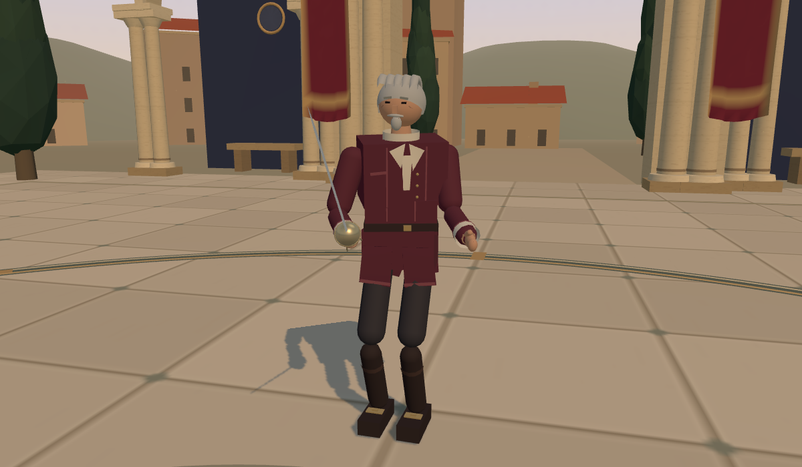
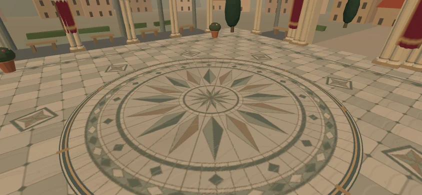

01 / 회랑마지막 교습
토메 비달
제자를 잃고 회랑의 문을 닫은 검술사범. 결투 명부에서 지워진 이름을 되찾으려 다시 칼을 듭니다. 정중한 말투 뒤에서, 상대의 첫 실수를 기다립니다.
“칼끝을 보시오. 내 얼굴 말고.”
붉은 회랑상아색·녹색 돌을 맞춘 꽃 문양 바닥과 겹쳐 열린 아치.
단단한 돌 발소리 사이로 붉은 천이 바람을 받습니다.
단단한 돌 발소리 사이로 붉은 천이 바람을 받습니다.


상감 바닥 자세히 보기 ↗ 토메와 겨루기 →